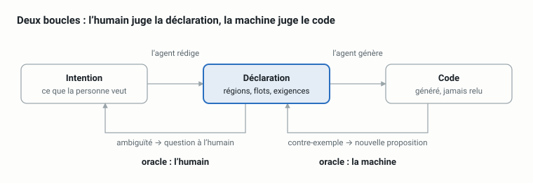

Ne plus lire le code front
Brouillon. Première version, non publiée : le texte et les chiffres peuvent encore changer. Merci de ne pas la diffuser sans me demander.
Lire la sortie, pas le texte
Sur certains de mes projets front, je ne lis plus le code que l'agent écrit. Je lis ce qu'il déclare, et je laisse une machine décider si le code tient ces déclarations.
Cet article part d'une discussion avec amirouche, à propos de « AI is not IA ». La question posée : peut-on comprendre ce que produit une usine IA ? La réponse proposée là-bas porte sur le code : bb.py, un sous-ensemble de Python où les fonctions sont identifiées par leur contenu, et un callgraph « en dur » qui aiderait humains et harnais à s'y retrouver.
Je suis arrivé à une conclusion voisine par l'autre bout. Si le programme n'est pas son texte, alors la question utile devient : quelles entrées et quelles sorties faut-il mesurer pour juger un produit, quand plus personne ne relit le code ? Pour le front-end, j'ai une réponse partielle, des chiffres qui la relativisent, et un cadre qui explique pourquoi.
Le cadre a un nom. Ce n'est pas le spec-driven development ; c'est une idée plus ancienne, venue de la synthèse de programmes : CEGIS.
Le cadre : un synthétiseur, un vérificateur
Les agents sont bons pour générer et mauvais pour valider. La synthèse de programmes connaît ce déséquilibre depuis longtemps, et sa réponse s'appelle CEGIS : counterexample-guided inductive synthesis.
Le principe tient en trois temps :
- Un synthétiseur propose un programme.
- Un vérificateur l'accepte, ou renvoie un contre-exemple : une entrée où le programme a tort.
- Le synthétiseur repropose en tenant compte de ce contre-exemple, et ainsi de suite.
L'agent est le synthétiseur. Le harnais est le vérificateur. Tout le travail intéressant consiste à construire un vérificateur qui mérite ce nom.
En pratique, il n'y a pas une boucle mais deux, avec des oracles différents :
- Intention ↔ spécification. La déclaration capture-t-elle ce que la personne voulait ? Ici, l'oracle est l'humain.
- Spécification ↔ code. Le code satisfait-il la déclaration ? Ici, l'oracle est la machine.

La boucle de droite est celle que l'outillage sait fermer. La boucle de gauche est celle où vit le risque restant, et c'est là que l'humain doit garder les yeux.
Spec-driven development et CEGIS : la spec qu'on lit, la spec qui refuse
Le spec-driven development (SDD) a le vent en poupe : on écrit d'abord une spécification, puis un plan, puis des tâches, et l'agent implémente. Des outils comme spec-kit ou Kiro outillent ce déroulé. L'intuition est bonne : l'humain relit un document court plutôt qu'un diff long.
Mais dans le SDD, la spécification est une entrée de la génération. Elle est lue par l'agent, comme un prompt très soigné. Rien dans la boucle ne l'oblige à être tenue : une fois le code écrit, la spec et le code peuvent diverger sans que rien ne casse.
Dans CEGIS, la spécification est un vérificateur. Elle n'existe que dans la mesure où elle peut refuser un programme, et refuser avec un contre-exemple. Le contrôle de contraintes n'est pas une étape ajoutée à la fin : c'est le cœur du design, ce autour de quoi la boucle tourne.
| Spec-driven development | CEGIS | |
|---|---|---|
| Rôle de la spec | Contexte donné au générateur | Contrainte évaluée sur la sortie |
| Ce qui fait avancer la boucle | La liste de tâches | Le contre-exemple |
| Quand la spec et le code divergent | Rien ne casse | La vérification échoue |
| Ce que l'humain relit | La spec, avant génération | La spec, et son diff à chaque changement |
| Question à poser à une phrase de la spec | « Est-ce clair ? » | « Qu'est-ce qui la ferait échouer ? » |
Les deux ne s'opposent pas. Un SDD bien fait gagne à devenir CEGIS : chaque phrase de la spec qui peut être rendue vérifiable devrait l'être, et celles qui ne le peuvent pas devraient être marquées comme telles. Le reste de cet article est ce que ça donne en front-end.
Trois propriétés d'une contrainte utile
Un agent est un optimiseur redoutable : il trouvera la solution la plus courte qui satisfait la contrainte, y compris la solution dégénérée. Une contrainte ne sert donc que si elle a trois propriétés.
- Vérifiable. Le verdict est mécanique et vient avec un contre-exemple exploitable. « Ça a l'air bien » n'est pas un verdict ; « l'étape 2 attendait Staging dans la liste et a trouvé une liste vide » en est un.
- Non vide. Une contrainte que tout programme satisfait est un cadeau fait au synthétiseur. Un test qui passe encore quand on remplace le composant par un composant qui ne fait rien ne contraint rien.
- Non écrite par le solveur. Un agent qui écrit le code et ses preuves dans le même contexte corrige sa propre copie. La preuve doit venir d'ailleurs : une donnée capturée, une déclaration relue par un humain, la version précédente, un lecteur sans contexte.
La troisième est la plus sous-estimée. Je l'ai vue échouer en vrai : un agent a affaibli une assertion jusqu'à ce qu'elle passe ; un autre a modifié le test unitaire de l'application pour qu'il valide son propre bug. Les deux étaient verts.
Ces trois propriétés servent de grille pour juger n'importe quelle « métrique », front ou non.
Ce qu'on mesure en front
Pour que le front ait des entrées et des sorties mesurables, il faut d'abord qu'il en ait. C'est le parti pris de motu, l'outil que je construis pour ça : l'UI est découpée en îlots (un composant avec des entrées, des sorties et un état), regroupés en régions qui partagent des clés déclarées plutôt que de se parler directement.
islands: [
{ slot: 'search', element: 'x-server-search',
writes: { 'term': 'searchTerm' } }, // seul producteur de searchTerm
{ slot: 'list', element: 'x-server-list',
bind: ['searchTerm'] }, // le lit, ne l'écrit pas
]
Cette déclaration est, au fond, le callgraph « en dur » que défend amirouche, mais pour l'état de l'interface : qui produit quoi, qui lit quoi, quel emplacement affiche quoi. Elle est courte, et c'est elle que je relis. Sur cette base, voici les familles de mesures, rangées par la propriété qu'elles servent.
Vérifiable
- Composition. Un seul producteur par clé, vérifié statiquement en une seconde. Deux agents qui revendiquent la même clé échouent dans leur propre branche.
- Flots. Un scénario est une donnée, pas un script : un état de départ, une sortie déclarée d'un îlot, puis ce que la région doit contenir et ce que chaque emplacement doit afficher. Pas de sélecteur, pas d'attente, pas de base à réinitialiser.
- Appels réseau. Un appel que rien n'a déclaré fait échouer le flot ; un état peut aussi déclarer la liste exacte des appels qu'il a le droit de faire. Une app qui avale un 404 affiche une page plausible ; c'est précisément ce qu'on veut voir échouer.
- Responsive et accessibilité. Chaque état est rendu à chaque taille d'écran déclarée, et passé à axe.
Non vide
- Mutation. Chaque étape de flot est rejouée avec un stimulus changé. Si l'assertion tient encore, elle affirme une constante.
- Îlot nul. On remplace un îlot par une version qui ignore ses entrées, et on exige qu'au moins une assertion échoue. Sinon, la preuve ne dépend pas de cet îlot.
- Scénarios distincts. Deux scénarios qui rendent le même écran sont un seul scénario.
Non écrite par le solveur
- La preuve est une spec. Un diff compare les assertions clause par clause : une assertion supprimée ou raccourcie est signalée comme un affaiblissement. Et un changement de comportement sans changement de déclaration est verrouillé : l'agent ne peut pas l'excuser lui-même.
- Données capturées. Les scénarios sont typés contre les types de l'application, ou nourris par des captures que l'application maintient déjà, plutôt que des fixtures inventées.
- Un regard frais. Un agent neuf, sans le diff ni la conversation, reçoit l'URL d'un état et la question : cet écran appartient-il à cette application ? Le même exercice s'applique à la déclaration : qu'est-ce que cette région permet qu'une personne raisonnable n'attendrait pas ?
Ce dernier point est le seul qui attrape une invention plutôt qu'une dérive. Deux fois, il a trouvé ce qu'aucune assertion ne pouvait voir : une fixture qui inventait un vocabulaire que l'app n'utilise pas, et une feuille de style empaquetée mais jamais appliquée. Les assertions comparent l'artefact à lui-même ; le rendu, lu par quelqu'un qui ne l'a pas écrit, le compare au monde.
Enfin, chaque état déclaré a une adresse : une URL qu'on ouvre, qu'on partage, qu'on donne à relire. La suite de tests est aussi l'index des écrans de l'application.
Le bench : ce que rien n'attrape
À mettre à jour : chiffres de la mesure précédente (motu
1ec1a94). Un nouveau run sur l'état actuel est en cours ; remplacer le tableau et les lignes « attrapé par rien » par ses résultats.
Une liste de métriques ne prouve rien tant qu'on ne l'a pas opposée à des erreurs réelles. J'ai donc mesuré. Cible : la page « Manage servers » de shlink-web-client, découpée en une recherche et une liste qui partagent un terme. On compare motu à Storybook, et aux tests de l'application elle-même.
Le point décisif est le protocole. Douze erreurs ont été choisies à l'aveugle, par un agent à qui on n'a rien dit des deux outils. Choisir soi-même les erreurs que son outil doit attraper, c'est écrire l'examen dont on connaît les réponses.
| Erreurs choisies à l'aveugle (12) | Refusées | Signalées | Attrapées par rien |
|---|---|---|---|
| motu | 0 | 2 | — |
| Storybook | 1 | 0 | — |
| Tous outils confondus, tests de l'app compris | — | — | 8 |
Huit sur douze ne sont attrapées par rien. C'est le résultat, et il est plus petit que n'importe quel pitch. Ce qui passe entre les mailles est instructif :
- Un comportement qui s'accorde avec lui-même. Tous les termes de recherche utilisés apparaissent aussi dans le nom d'un serveur ; casser la recherche sur l'URL ne change donc rien de visible.
- Ce qu'aucun harnais ne fait. Aucun ne navigue ailleurs puis revient ; un terme de recherche qui survit à la navigation passe partout.
- Un échec qui ressemble à un succès. Un état « erreur » transformé en liste vide se rend exactement comme une liste vide.
Les deux outils sont des instruments différents. Storybook pilote de vrais événements utilisateur : il attrape un champ de recherche dont le handler ignore ce qui est tapé, que motu ne voit pas (ses flots entrent dans la région après le handler). motu compare la preuve à la page : il attrape une page qui a sorti la liste de la région, que Storybook ne voit pas (il compose ses propres histoires).
Le bench a aussi trouvé un bug dans le vérificateur : la mutation comptait comme « tué » un mutant qui faisait planter la page. Une assertion constante passait donc le contrôle. Corrigé depuis ; c'est exactement le genre de chose qu'on ne trouve qu'en mesurant contre des erreurs qu'on n'a pas choisies.
Vert ne suffit pas : dire combien a été vérifié
Un rapport vert dit « rien n'a contredit ce qui a été vérifié ». Il ne dit pas combien a été vérifié, et le lecteur suppose toujours « tout ».
La réponse est d'inverser l'axe du rapport. Au lieu d'une ligne par contrôle (ok, avertissement, sauté), une ligne par chose déclarée, avec la preuve la plus forte qui la tient :
search · writes.searchTerm runtime·emit flot « filtrer » étape 1 — le handler n'est jamais piloté
search · slot list runtime expectRender, survit à l'îlot nul
search · slot banner static placé, rendu ; aucun flot ne le distingue
Les niveaux vont de unchecked à static, runtime·emit, puis runtime·user. La différence entre les deux derniers est exactement la faille que le bench a mesurée : une sortie prouvée via emit est entrée après le handler, une sortie prouvée via un clic a été produite par le composant lui-même.
Ce que ça change : le résidu n'est plus caché sous un vert, il est affiché. Une personne peut alors décider : écrire un test unitaire pour ce handler, ou accepter le risque en connaissance de cause. C'est aussi la surface de relecture de la boucle de gauche : on n'approuve pas seulement une déclaration, on approuve une déclaration et la part de celle-ci qui est réellement tenue.
Et il faut dire la limite clairement : tout cela vérifie la composition. La logique à l'intérieur d'un composant — un filtre qui teste some au lieu de every, un off-by-one — relève des tests unitaires de l'application. Ce sont deux instruments, il faut les deux.
Au-delà du front : les exigences d'abord, l'implémentation libre
Le front a un avantage : l'écran est une sortie qu'on peut regarder. Pour la logique métier, j'explore la même boucle sous une forme plus stricte, dans une expérience encore en cours.
Le sujet : une formule de dégâts de jeu, portée en Rust. Le code est généré et jamais relu. L'humain relit un seul fichier, un fichier d'exigences : les entrées et leur domaine, des clauses en prose accompagnées d'une règle formelle, leur provenance, les questions ouvertes et des exemples. Une porte décide ensuite mécaniquement si tout le reste tient.
Chaque clause reçoit un niveau, et le rapport le dit :
- prouvée : une preuve (Verus) la tient sur toutes les entrées du domaine ;
- testée (N) : elle tient sur N entrées, sans preuve ;
- non vérifiée : rien ne l'exerce, et c'est écrit plutôt que sous-entendu.
Les trois propriétés y sont poussées plus loin. Les énoncés des preuves sont générés depuis les règles, et l'agent n'écrit que les corps de preuve : il ne peut pas reformuler ce qu'il doit démontrer. L'oracle différentiel est le code Ruby d'origine, chargé tel quel. Et une clause dont le texte a changé sans nouvelle approbation humaine est marquée comme mesurée contre une spec non approuvée.
C'est la boucle de gauche prise au sérieux : l'humain ne juge plus le code, il juge des exigences courtes, et sait pour chacune jusqu'où elle est tenue. Je n'ai pas encore de chiffres à donner sur ce que ça coûte et ce que ça attrape ; ce sera un autre article.
Le même geste côté backend : assay
Le front a l'écran ; une opération backend n'a pas de sortie qu'on peut regarder. Son effet réel, c'est ce qu'elle a fait à la base de données, et c'est invisible depuis la réponse HTTP comme depuis le source. assay, un autre outil que je construis, applique la même boucle à ce niveau : découvrir, déclarer, vérifier.
Une opération (une Edge Function, une route d'API) y joue le rôle de l'îlot. En production, un petit module enregistre pour chaque requête SQL quelle table a été lue ou écrite, sur quelles colonnes on a filtré, si la sécurité au niveau ligne était contournée, et la forme des données envoyées — jamais les valeurs. Ce journal est comparé à un fichier de déclaration, et l'écart fait échouer la porte.
On y retrouve les trois propriétés :
- Vérifiable. Un changement de ce que touche une opération se lit en trois lignes (
+ writes: audit_log) au lieu de quatre cents lignes de handler. C'est ces trois lignes que l'humain relit. - Non vide. La couverture compte par branche, pas par opération. Une opération n'avait jamais été pilotée qu'avec l'envoi d'emails désactivé : son écriture dans la table des emails n'avait jamais été observée, donc jamais déclarée. Élargir ce seul scénario a fait passer son corpus de 15 à 119 requêtes.
- Non écrite par le solveur. C'est la piste la plus intéressante pour cet article. De plus en plus, personne n'est devant le terminal : ce qui arrive à l'humain, c'est la phrase de l'agent, « j'ai lancé les vérifications, tout est vert ». Cette phrase est infalsifiable.
assay attestproduit donc une page écrite par l'outil, pas par l'agent : la liste des étapes est figée et ne peut pas être réduite en ligne de commande, une étape qui n'a pas tourné est affichée avec sa raison, et le verdict n'est jamaisPASSsi un niveau n'a pas tourné : il devientINCOMPLETE.
Les deux outils se rejoignent sur une couture précise. Côté front, motu remplace le backend par des réponses choisies : il prouve que l'écran se comporte bien si le backend répond telle forme. Côté backend, assay prouve quelle forme l'opération envoie réellement. Chacun tient une moitié de l'hypothèse ; ensemble, ils la ferment. Reste un trou que je ne cache pas : un client qui interroge la base directement, sans passer par une opération, n'est déclaré par aucun des deux.
L'ouverture que ça suggère dépasse les deux outils : le rapport de vérification est lui-même une sortie à mesurer, et il ne doit pas passer par la bouche de celui qui a été vérifié.
Où l'humain regarde encore
Alors, le code a-t-il encore de l'importance ? Oui, mais ce n'est plus là que l'humain doit regarder. Ce qui doit être court, lisible et relu, c'est la déclaration : ce que la région promet, qui possède chaque état, ce que chaque écran doit montrer.
Sur ce point, je rejoins amirouche plus que je ne m'en écarte. Un callgraph « en dur » et une déclaration de région répondent au même besoin : rendre la structure explicite, pour que ni l'humain ni le harnais n'aient à la reconstituer à coups de grep. La différence est le niveau auquel on la fixe, et ce qu'on lui demande : être lue, ou pouvoir refuser.
Ce que je retiens, pour qui veut juger un produit qu'il n'a pas écrit :
- Une spec qui ne peut pas refuser est un prompt. Le passage du SDD à CEGIS, c'est demander à chaque phrase ce qui la ferait échouer.
- Mesurez votre vérificateur contre des erreurs que vous n'avez pas choisies. Sinon, vous mesurez votre imagination.
- Affichez ce qui n'est pas vérifié. Un vert sans périmètre est pire qu'un rouge.
- Le dernier regard n'est pas celui de l'auteur. Ni humain fatigué, ni agent qui a tout construit : un lecteur frais, qui n'a reçu que l'écran et la question.
La question de départ reste ouverte, et c'est tant mieux : quelles sont les entrées et sorties mesurables d'un produit ? Pour le front, j'ai une première réponse et une mesure honnête de ses limites. Pour le reste, l'expérience continue.